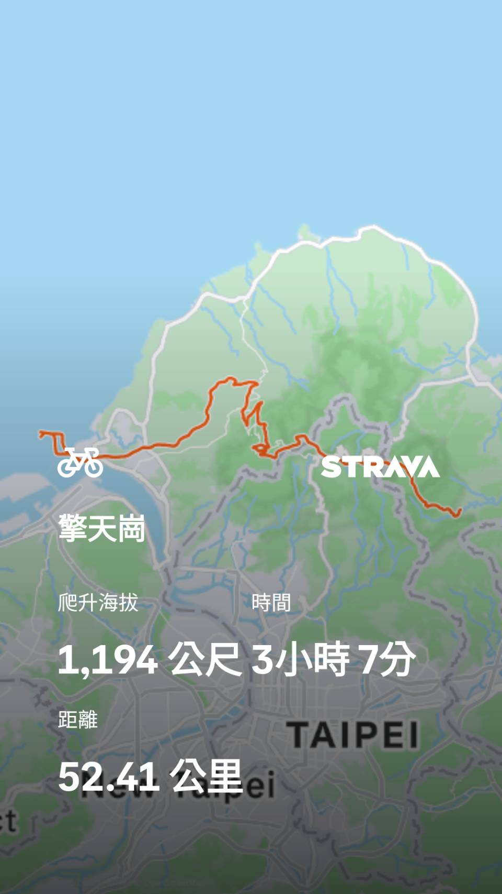

活動重點
活動日期
2026 / 06 / 06
星期六
集合 / 出發
06:45 集合
07:00 準時出發
今日目標
擎天崗
陽明山最美草原
行程時間表
06:45 AM
集合 📍
及泰淡水紅毛城停車場集合，確認人員裝備
07:00 AM
準時出發 🚴
請勿遲到！從淡水出發，接上巴拉卡公路
途中
巴拉卡公路爬升
挑戰巴拉卡！沿途俯瞰淡水河口，風景無敵
途中
二子坪
絕佳補給休息點，欣賞二子坪濕地草原美景
途中
陽金公路
接上陽金公路，俯瞰金山平原，視野開闊
途中
中湖戰備道
轉入戰備道路段，體驗隱密山路的獨特滋味
終點 🏆
抵達擎天崗！
海拔約 820m，遼闊草原，打卡留念，補給休息
11:30 AM
聚餐 🍽️
LA VILLA DANSHUI 餐廳開門，一起大吃慶功！
騎行路線示意圖

距離
52.41公里
爬升海拔
1,194公尺
參考時間
3時07分
依據實際紀錄，個人狀況因人而異
地點資訊
注意事項
- 請於 06:45 前抵達及泰淡水紅毛城停車場，07:00 準時出發，勿遲到
- 全程距離 52km、爬升 1,194m，出發前請確認車況良好（煞車、胎壓、變速）
- 攜帶充足飲水與補給食品，山上補給點少
- 全程戴好安全帽，注意山路車輛及彎道安全
- 天氣多變，建議備妥防風薄外套，山頂氣溫較低
- 騎行結束後統一前往 LA VILLA DANSHUI 聚餐，11:30 餐廳開門